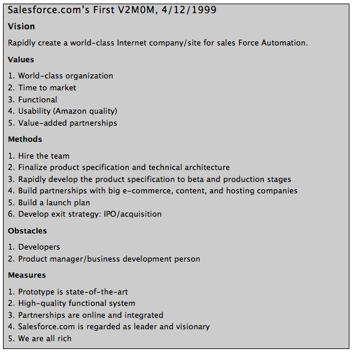

V2MOM 🚀
Set your goals!

V2MOM, set your goals! 🚀
Introdución
Último post de la pequeña serie sobre frameworks como ayuda a la hora de establecer objetivos. En el anterior post hablamos sobre objetivos SMART y cómo a través de un simple acrónimo, usado como regla nemotécnica, podemos de forma guiada definir nuestros objetivos. En el anterior posts también comentamos diferencias y similitudes entre SMART y OKR y cuando es recomendable usar uno u otro framework.
Os dejo por aquí el listado de los frameworks que hemos comentado durante toda la serie:
En este post vamos a hablar sobre otro de los framework más extendidos a la hora de fijar objetivos a nivel empresarial, V2MOM.
Hagamos un poco de historia
V2MOM, fué popularizado por Salesforce, unas de las primeras empresas en crear un modelo de CRM en la nube cotizando en bolsa, considerada una de las 100 mejores empresas para trabajar en 2018 y 2019.
La historia empieza con Marc Benioff, actual CEO de Salesforce, trabajando en Oracle. Marc tenía problemas para gestionar su equipo por falta de claridad en la visión y los objetivos de la compañía. Oracle por aquel entonces no contaba casi ni con un plan a 6 meses vista, lo que dificultaba el trabajo especialmente en una compañía como Oracle que estaba en pleno crecimiento y expansión.
Debido a esta falta de herramientas para poder comunicar la visión y objetivos de la empresa, Marc decidió crear su propia herramienta de gestión de procesos que denominó V2MOM.
¿Qué es V2MOM?
V2MOM es un acrónimo que hace referencia a la Visión, Valores, Métodos, Obstáculos y Medidas de la compañía.
Como ya venimos comentando en la serie de posts, tener un sistema para ayudarnos a alinear la organización hacia una estrategia y objetivos comunes, se convierte en algo crítico especialmente en startups (con un modelo lean) donde por la naturaleza del propio negocio suelen darse cambios estratégicos con frecuencia o en empresas con un modelo de negocio más asentado y maduro pero con un crecimiento enorme, donde la comunicación y alineación de los objetivos de la empresa en los diferente niveles se convierte en un desafío.
Alguno de los beneficios de tener un buen alineamiento en todos niveles que venimos comentando en la serie son:
- Ayudar a mantener a todo el mundo moviéndose y trabajando en la misma dirección.
- Clarificar cuáles son la prioridades del negocio, poniendo el foco en lo importante.
- Compañía, managers, equipos, todos pueden medir su progreso frente a los objetivos definidos.
- Ayuda a mantener y hacer visible el compromiso de los equipos.
El propio Marc, describe V2MOM como el secreto mejor guardado que ha ayudado Salesforce a alcanzar la excelencia y un rápido crecimiento.
Vamos a ver en más detalle cada uno de los términos que componen el acrónimo:
- Vision: La visión de la compañía tiene que representar que logros queremos conseguir, como vemos la empresa en el futuro. La visión nos tiene que indicar el porqué hacemos lo que hacemos. Debería ser una representación de lo más importante para la empresa, donde tenemos que poner el foco.
- Values: Representarán los principios y creencias que nos ayudarán a encaminarnos hacia la imagen de empresa que representa nuestra visión de la misma.
- Methods: Principales iniciativas en la que cada equipo deberá poner el foco para ayudar a la empresa a conseguir alcanzar su visión. Acciones que forman parte del plan de ejecución.
- Obstacles: Representará todos aquellos problemas que puedan impedir el progreso o hagan más difícil alcanzar la visión de empresa que nos hemos marcado. Identificar por anticipado todos los problemas que nos podemos encontrar por el camino, nos ayudará a prevenir o estar preparado cuando estos se nos presenten.
- Measures: No ayudaran a poder hacer seguimiento de en qué punto nos encontramos para alcanzar nuestro objetivo. Es conveniente definir alguna medida de progreso para cada unos de los métodos que hemos planteado.
Crea tu propio V2MOM
Los principales beneficios de usar un framework como V2MOM es facilitar el establecimiento de los objetivos y la alineación de estos con la visión/misión de la compañía.
El proceso de creación de V2MOM, debería empezar por el nivel más alto de la organización, cada nivel de la empresa debería mirar al nivel superior a la hora de definir su V2MOM.
Está demostrado que el framework, da lo mejor de sí, cuando es utilizado por toda la compañía, aunque también puede resultar muy útil para ayudar alienar un único departamento o un equipo específico.
Algunos consejos para crear nuestro propio V2MOM son:
- Intenta que sea un documento de máximo un página, esto nos forzará a concretar y ser más concisos.
- En cada apartado intenta organizar la prioridades por orden de importancia.
- A la hora de alinerarte con el nivel superior, no copies y pegues, define tu propia visión y objetivos.
Os comparto la plantilla que en Salesforce utilizan los trabajadores para definir su V2MOM:
VISION (What do you want?):
VALUES (What’s important about it?):
METHODS (How do you get it?):
OBSTACLES (What might stand in the way?):
MEASURES (How will you know when you have it?):
Os dejo por aquí el primer V2MOM de Salesforce, que ayudó según su creador y CEO de la compañía a ser la primera empresa con un CRM SaaS en salir a bolsa:

En la bibliografía he dejado dos links de la propia Salesforce, donde definen el proceso que siguen para la creación y gestión de los V2MOM en la propia empresa.
Con este post concluimos la serie de Posts sobre herramientas para establecer y gestionar objetivos.
Durante toda la serie hemos hecho mucho hincapié en la importancia que tiene no sólo definir los objetivos, sino también alinear estos con la visión de la compañía de modo que toda empresa tenga claro dónde tiene que poner el foco.
Así mismo hemos resaltado la importancia de establecer sistemas de medida cuantificables que nos permitan saber en qué punto nos encontramos de alcanzar nuestros objetivos, de modo que podamos tomar medidas correctivas o pivotar si vemos que no estamos consiguiendo los objetivos marcados o incluso que el propio mercado nos obligue a redefinirnos.
De nuevo si has llegado hasta aquí gracias por leerme, espero que te haya resultado interesante y útil, si es así compartelo para que le pueda llegar a más gente.
Muchas gracias!
Bibliografía:
- https://www.salesforce.com/blog/2013/04/how-to-create-alignment-within-your-company.html
- https://trailhead.salesforce.com/en/content/learn/modules/write
- https://trailhead.salesforce.com/en/content/learn/modules/manage
- https://visible.vc/blog/v2mom-salesforce/
- https://medium.com/@joonaski/v2mom-the-ugly-ass-acronym-your-growth-business-really-needs
- https://www.inc.com/sangram-vajre/v2mom-exercise-your-business-needs-to-do-every-quarter.html
- https://aaronbeashel.com/v2mom-framework-align-b2b-saas-team/